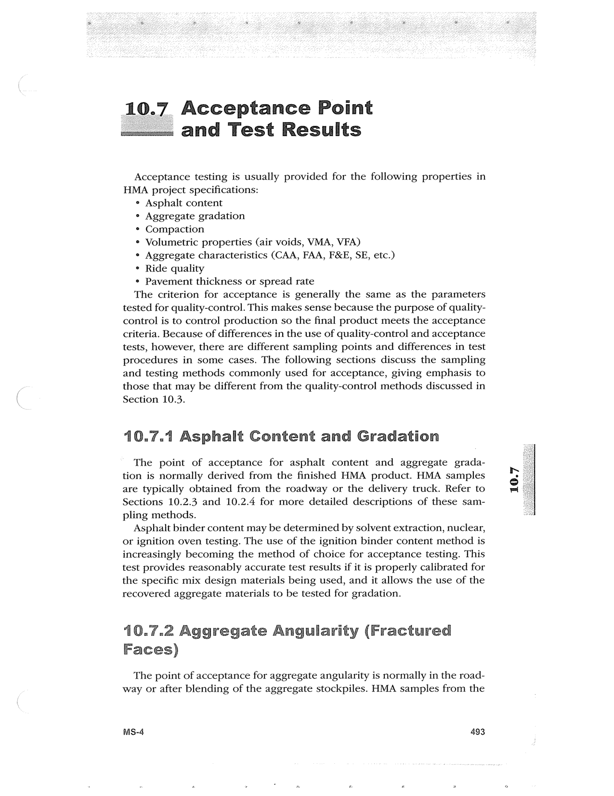

PDF page 527 · book page sequence 493


Searchable transcription
Unproofread OCR · 289 detected words; mean OCR confidence 94.87. Check technical values, symbols and table columns against the scan.
10.7 Acceptance Point and Test Results
Acceptance testing is usually provided for the following properties in HMA project specifications:
° Asphalt content
° Aggregate gradation
* Compaction
® Volumetric properties (air voids, VMA, VFA)
° Aggregate characteristics (CAA, FAA, F&E, SE, etc.)
° Ride quality
° Pavement thickness or spread rate
The criterion for acceptance is generally the same as the parameters tested for quality-control. This makes sense because the purpose of quality- control is to control production so the final product meets the acceptance criteria. Because of differences in the use of quality-control and acceptance tests, however, there are different sampling points and differences in test procedures in some cases. The following sections discuss the sampling and testing methods commonly used for acceptance, giving emphasis to those that may be different from the quality-control methods discussed in Section 10.3.
10.7.1 Asphalt Content and Gradation
The point of acceptance for asphalt content and aggregate grada- tion is normally derived from the finished HMA product. HMA samples are typically obtained from the roadway or the delivery truck. Refer to Sections 10.2.3 and 10.2.4 for more detailed descriptions of these sam- pling methods.
Asphalt binder content may be determined by solvent extraction, nuclear, or ignition oven testing. The use of the ignition binder content method is increasingly becoming the method of choice for acceptance testing. This test provides reasonably accurate test results if it is properly calibrated for the specific mix design materials being used, and it allows the use of the recovered aggregate materials to be tested for gradation.
10.7.2 Aggregate Angularity (Fractured Faces)
The point of acceptance for aggregate angularity is normally in the road- way or after blending of the aggregate stockpiles. HMA samples from the
MS-4 493